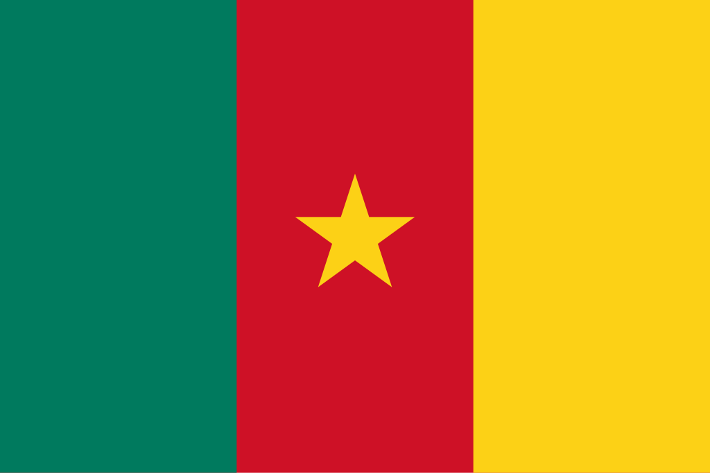

Camarões
 Camarões, oficialmente República dos Camarões, é um país da África Central localizado no Golfo da Guiné, conhecido por sua diversidade cultural, geográfica e étnica, o que lhe rendeu o apelido de "África em miniatura". O território camaronês é caracterizado por paisagens variadas, que vão de praias tropicais no litoral atlântico a florestas densas, planícies férteis, savanas e montanhas, como o Monte Camarões, o ponto mais alto da África Ocidental. Faz fronteira com a Nigéria a noroeste, Chade a nordeste, República Centro-Africana a leste e Gabão, Congo e Guiné Equatorial ao sul. O país possui cerca de 28 milhões de habitantes, distribuídos entre mais de 250 grupos étnicos, que falam diferentes línguas locais, além do francês e do inglês, que são os idiomas oficiais. Sua economia é diversificada, apoiada em petróleo, agricultura e madeira, mas também enfrenta desafios como desigualdade social e instabilidade política.
História
A história de Camarões remonta a antigas populações de caçadores e agricultores que habitaram a região há milhares de anos. No período medieval, reinos poderosos como os dos Bamum e Tikar floresceram no interior, desenvolvendo sistemas políticos e culturais complexos. No século XV, navegadores portugueses chegaram à costa e deram o nome ao país devido à abundância de camarões no rio Wouri. Durante os séculos seguintes, os europeus usaram a região como ponto de comércio de escravos e produtos tropicais. Em 1884, Camarões tornou-se colônia alemã, sob o nome de Kamerun, período em que foram construídas infraestruturas modernas, mas também marcado pela exploração econômica. Após a Primeira Guerra Mundial, o território foi dividido entre França e Reino Unido sob mandato da Liga das Nações, criando uma divisão linguística que ainda influencia o país.
Em 1960, a parte francesa conquistou a independência como República dos Camarões, liderada por Ahmadou Ahidjo, enquanto em 1961, a parte britânica do sul optou por unir-se ao novo Estado, formando a atual República Federal dos Camarões. Desde então, o país passou por transformações políticas, incluindo a adoção de uma constituição unitária em 1972 e a ascensão de Paul Biya em 1982, que permanece no poder até hoje. Apesar de sua estabilidade relativa em comparação com países vizinhos, Camarões enfrenta desafios internos, como tensões separatistas nas regiões anglófonas, corrupção e desigualdade. Ainda assim, sua diversidade cultural e geográfica o tornam um dos países mais singulares da África.
Cultura
A cultura camaronesa é uma das mais ricas e diversas da África, resultado da convivência de mais de 250 grupos étnicos que preservam suas tradições, línguas e costumes. A música e a dança ocupam lugar central, sendo o país o berço de gêneros musicais reconhecidos internacionalmente, como o makossa e o bikutsi, que misturam ritmos africanos tradicionais com influências modernas. A literatura e as artes também refletem a pluralidade cultural, explorando temas como identidade, colonialismo e modernidade. O francês e o inglês são as línguas oficiais, mas dezenas de idiomas locais, como ewondo, duala e fulfulde, são falados em diferentes regiões.
A religiosidade também é um traço importante: o cristianismo (catolicismo e protestantismo) é predominante, mas o islamismo e as religiões tradicionais africanas coexistem, moldando práticas sociais e comunitárias. A culinária camaronesa é diversa e reflete a riqueza agrícola do país, com pratos como o ndolé (ensopado de folhas verdes com amendoim e peixe ou carne) e o peixe assado acompanhado de banana-pão ou mandioca. Festivais culturais, como o Festival Nacional das Artes e Culturas (FENAC), celebram essa diversidade, unindo expressões artísticas de diferentes grupos. Essa combinação de tradições locais com influências modernas transforma os Camarões em um verdadeiro mosaico cultural africano.


Clima
O clima de Camarões é tão diverso quanto sua geografia, variando do equatorial úmido nas florestas do sul ao semiárido nas regiões do norte. O litoral atlântico é marcado por temperaturas elevadas e alta umidade, com chuvas intensas, especialmente em Douala, uma das cidades mais chuvosas da África. Já o norte, próximo ao Lago Chade, apresenta um clima mais seco e quente, com longos períodos de seca e temperaturas que podem ultrapassar 40 °C. Nas regiões montanhosas do oeste, como no Monte Camarões, o clima é mais ameno, e a altitude proporciona temperaturas frescas e chuvas regulares.
Essa diversidade climática influencia diretamente a agricultura, que é uma das bases da economia nacional. Enquanto o sul favorece o cultivo de cacau, café e bananas, o norte é mais propício à criação de gado e à produção de milho e sorgo. No entanto, a variabilidade climática também representa desafios, como desertificação no norte, enchentes no sul e impactos das mudanças climáticas, que ameaçam a segurança alimentar e o desenvolvimento sustentável do país.
Biodiversidade
Camarões é considerado um dos países mais biodiversos da África, abrigando florestas tropicais, savanas e ecossistemas montanhosos que sustentam uma impressionante variedade de espécies. Nas florestas do sul, vivem gorilas, chimpanzés, elefantes-da-floresta e leopardos, enquanto as savanas do norte abrigam leões, girafas, antílopes e rinocerontes. O país é também um dos principais refúgios de aves na África, com mais de 900 espécies registradas, além de répteis e anfíbios únicos. O Monte Camarões, um vulcão ativo, possui espécies endêmicas de plantas e animais que não existem em nenhum outro lugar do mundo.
Para proteger essa riqueza natural, Camarões possui parques nacionais e reservas, como o Parque Nacional de Waza, famoso por seus leões e elefantes, e a Reserva de Fauna de Dja, Patrimônio Mundial da UNESCO, que conserva uma das maiores áreas de floresta tropical intacta da África. Apesar disso, a biodiversidade enfrenta sérias ameaças, como o desmatamento, a caça ilegal e a expansão agrícola. O país investe em projetos de conservação e ecoturismo, que têm potencial para equilibrar a preservação ambiental com o desenvolvimento econômico e social.


Cidades
As cidades de Camarões desempenham papéis estratégicos no desenvolvimento do país, refletindo sua diversidade cultural e econômica. A capital política, Yaoundé, está localizada no centro-sul e é o coração administrativo, abrigando instituições governamentais, universidades e centros de pesquisa. Com sua arquitetura moderna misturada a bairros tradicionais, Yaoundé também é conhecida pelas colinas que a cercam, sendo chamada de “cidade das sete colinas”. Já Douala, no litoral atlântico, é a maior cidade e o principal centro econômico, abrigando o maior porto do país, além de indústrias, comércio e conexões internacionais. É uma cidade vibrante, multicultural e essencial para o crescimento do país.
Além dessas duas maiores cidades, outras localidades importantes incluem Garoua, centro comercial do norte; Maroua, polo cultural e turístico por sua proximidade ao Parque Nacional de Waza; e Bafoussam, importante centro urbano do oeste. Essas cidades, juntas, mostram a diversidade geográfica e cultural de Camarões, que equilibra tradição e modernidade. Yaoundé e Douala, no entanto, permanecem como os principais polos urbanos, representando o equilíbrio entre administração política e força econômica no país.